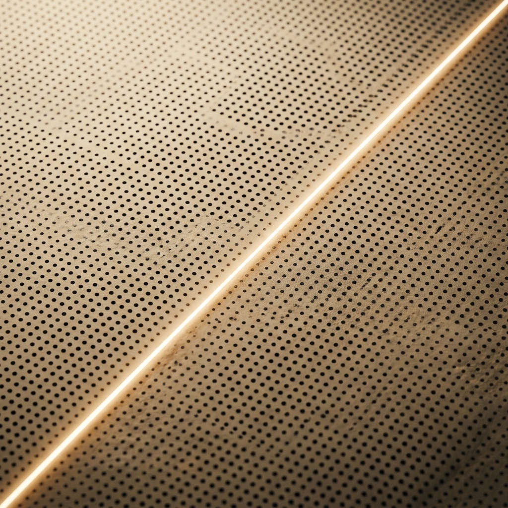
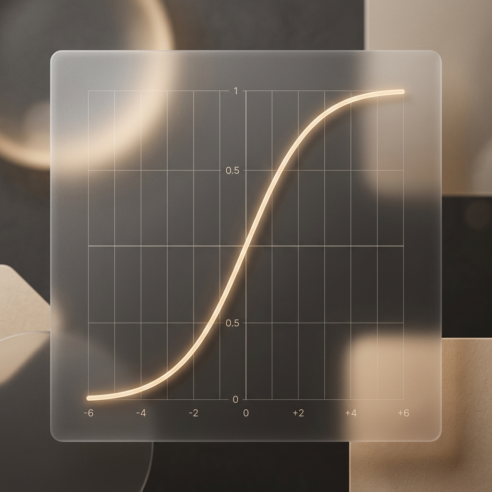

机器学习大厦最基础的基石。
x : 输入特征（面积、时间、投入）
y : 预测输出（房价、成绩、销量）
w : 权重 / 斜率（单价、效率、转化率）
b : 偏置 / 截距（基础值）
预测具体的数值结果。通过最小化预测值与真实值的平方误差来学习。
虽然名字叫回归，但它是分类模型。预测事件发生的可能性（0 到 1）。
点击画布添加数据点，观察算法如何寻找最优直线。
将 (-∞, +∞) 的直线输出，压缩到 (0, 1) 的概率区间。
其中 z = wx + b。这个非线性映射让线性模型具备了分类的能力。

"最小化误差，
即是寻找真理。"
The pursuit of the minimum error is the path to the optimal solution.
Simple lines can hold profound insights.
当直线不再奏效，我们将如何定义复杂的规律？